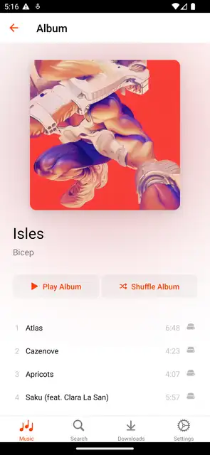
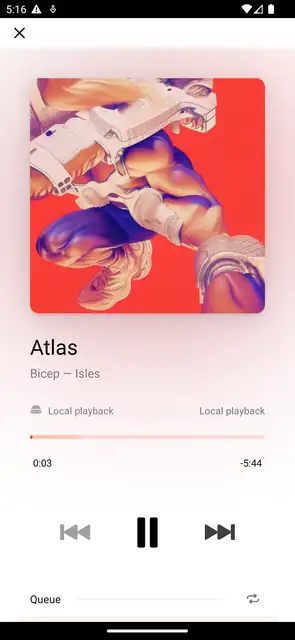

Fintunes
إنترنت ومتصفحات
Fintunes is a streaming audio player for the Jellyfin media system. It features a gorgeous interface that allows you to play your favourite music with ease. You can search your entire library for any track, or just take it easy with a playlist that you've created earlier in Jellyfin. All tracks are
✓ ترخيص مفتوح (MIT) · آخر تحديث: 2026-04-29
2.5.0الإصدار
133.3 MBالحجم
MITالرخصة
Open in Kanzتحميل APK (133.3 MB)
Download APK
SHA-256: e31d2c387d413622606643bd7402169cf53600444766110c4c13825e53850cad


امسح الكود لفتح صفحة التطبيق
Scan to open this app page
لو كنز مش متثبت عندك: نزّل متجر كنز.
Not installed? Get the Kanz store.